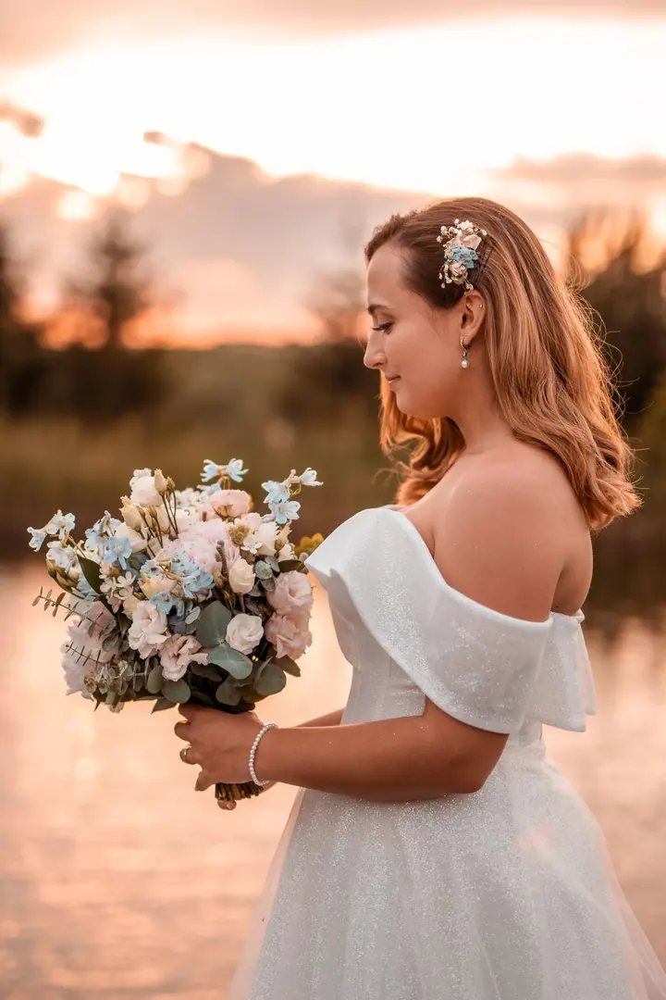
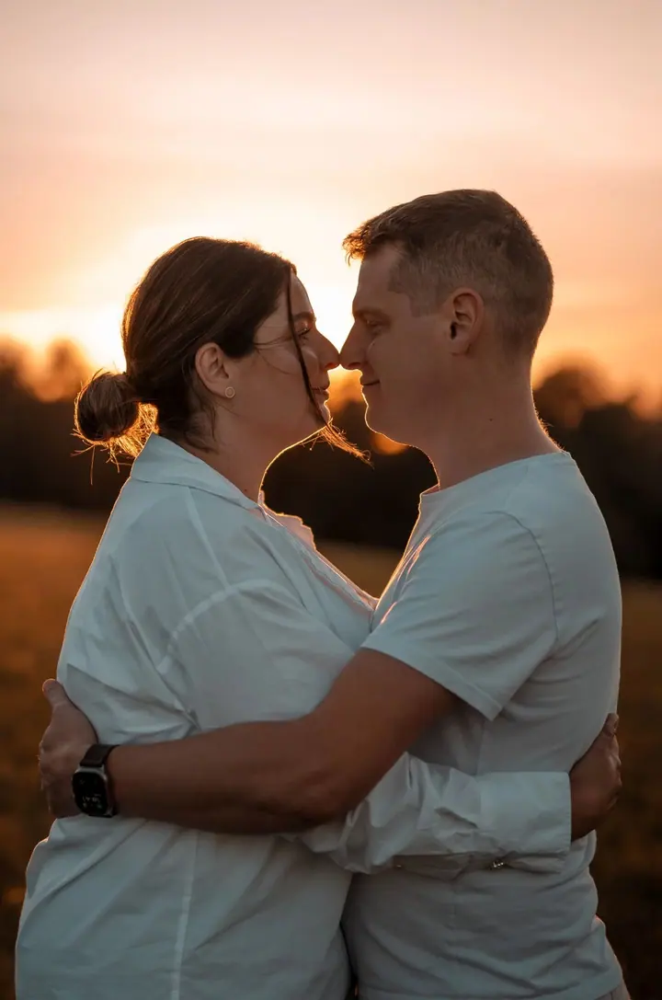
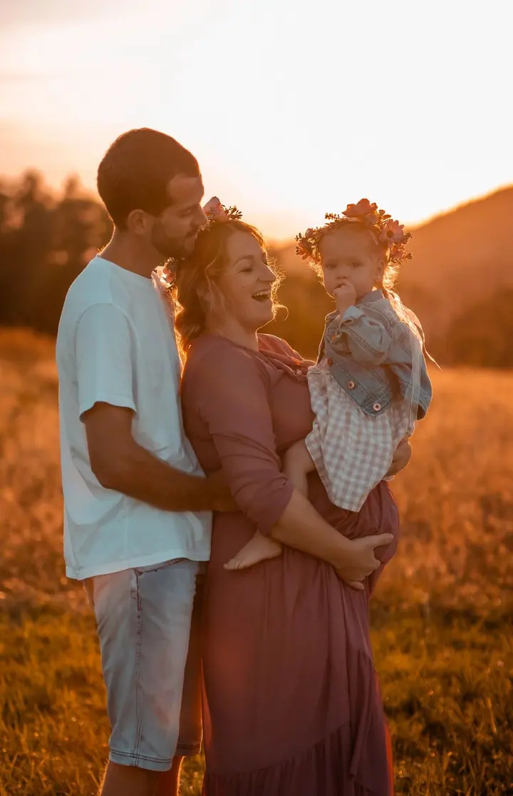
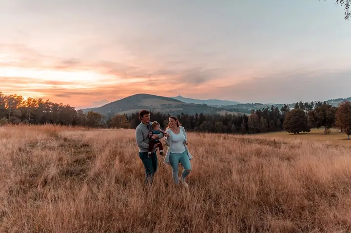

jedna
Svatební focení
Autentická svatební reportáž od ranního chvění v prstech přes dojemné slzy rodičů až po radost na parketu. Jsem u vás jako tichý pozorovatel, neruším a neinscenuji.

Svatební, párová a rodinná fotografka · Liberec, Jizerské hory, Lužické hory

Jmenuji se Aneta Zavřelová a jsem fotografka z Liberce. Fotím svatby, páry i rodiny, nejraději ve zlaté hodince, kdy je světlo měkké a hřejivé. Nečekejte žádné strojené pózy, jen vás dva nebo celou vaši rodinu a skutečné emoce.
Více o mně
Co fotím
jedna
Autentická svatební reportáž od ranního chvění v prstech přes dojemné slzy rodičů až po radost na parketu. Jsem u vás jako tichý pozorovatel, neruším a neinscenuji.
dvě
Letmé doteky, upřímný smích a pohledy, které si vyměňujete, když si myslíte, že se nikdo nedívá. Nejraději v přírodě při západu slunce, ale klidně i u vás doma nebo v kavárně.
tři
Žádné nucené úsměvy ani řazení podle výšky. Nechte děti běhat, blbnout a být samy sebou, právě tehdy vznikají ty nejcennější snímky.
Portrét, na kterém budete opravdu vy, ať ho chcete pro radost, pro svou značku, nebo na památku. Během focení vás citlivě povedu, bez křeče a strojenosti.
Ta nejkrásnější světla přicházejí se západem slunce

Za objektivem
Miluji momentky, opravdovost a to nejkrásnější světlo, jaké nám sama příroda nabízí. Focení při západu slunce je moje srdcová záležitost a poznávací znamení. Věřím, že právě v tomhle čase vznikají ty nejromantičtější párové i rodinné fotografie. Nezaskočí mě ale ani focení během dne, i ostré denní světlo má své kouzlo.
Často od klientů slyším: „My se neumíme fotit.“ Věřte mi, že jsem ještě nepotkala nikoho, kdo by nebyl fotogenický. Moje práce spočívá v tom, abyste se před objektivem cítili uvolněně. Fotím především momentky, takže na žádné křečovité pózy u mě nenarazíte.
Primárně působím v Liberci a celých severních Čechách. Ráda fotím v zákoutích Jizerských a Lužických hor a v okolí Ještědu. Pokud ale máte vysněné místo jinde, ráda za vámi a vaším příběhem dojedu kamkoliv.
Aneta
Napište mi nebo zavolejte. Před focením si vše důkladně probereme, abyste věděli, co čekat.
Znám desítky krásných míst v Jizerských horách, u Ještědu a v okolí. Pomůžu vám vybrat to ideální, nebo přijedu tam, kam si přejete vy.
Sejdeme se, nejraději před západem slunce. Žádné nucené pózy, jen procházka, smích a vaše emoce.
Hotové fotky dostanete do 7 dnů v přehledné online galerii. Ke stažení jsou ve dvojím rozlišení: pro velkoformátový tisk a pro sdílení.
Portfolio
Otázky
Vůbec ne. Ještě jsem nepotkala nikoho, kdo by nebyl fotogenický. Fotím hlavně momentky a během focení vás jemně povedu, takže se nemusíte ničeho bát.
Hlavně v Liberci a v celých severních Čechách, ráda v Jizerských a Lužických horách a u Ještědu. Po domluvě přijedu kamkoliv po republice.
Do 7 dnů v online galerii, ve dvou rozlišeních: plném pro tisk a menším pro sociální sítě a posílání rodině.
Rodinné focení stojí 2 850 Kč, focení oslav začíná na 3 900 Kč. Cenu svatebního focení vždy domlouváme individuálně. Napište mi a pošlu vám aktuální ceník.